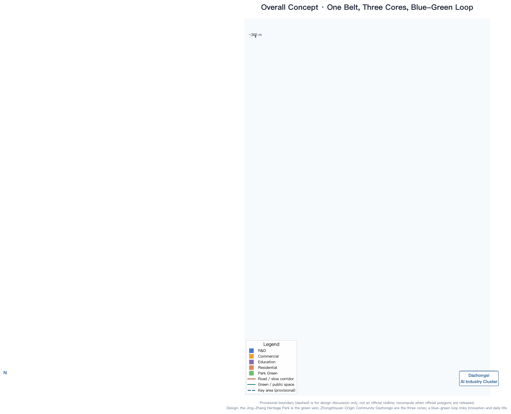
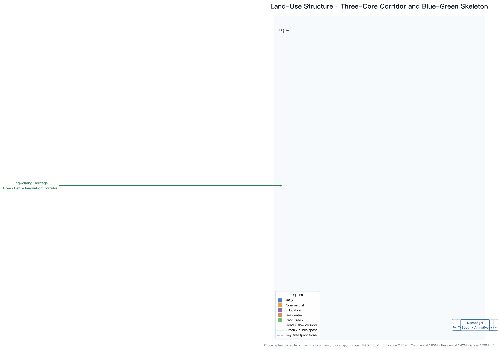
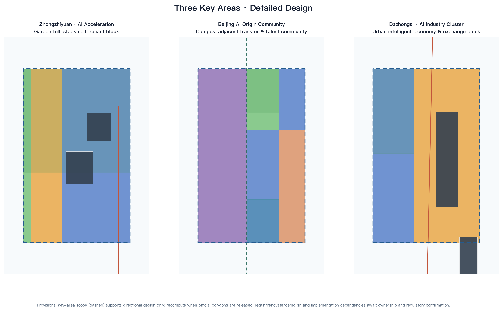
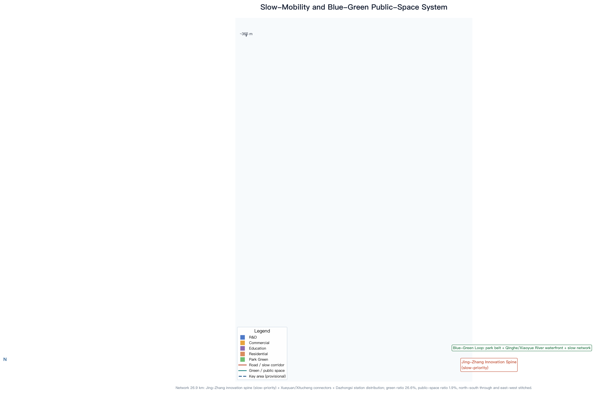
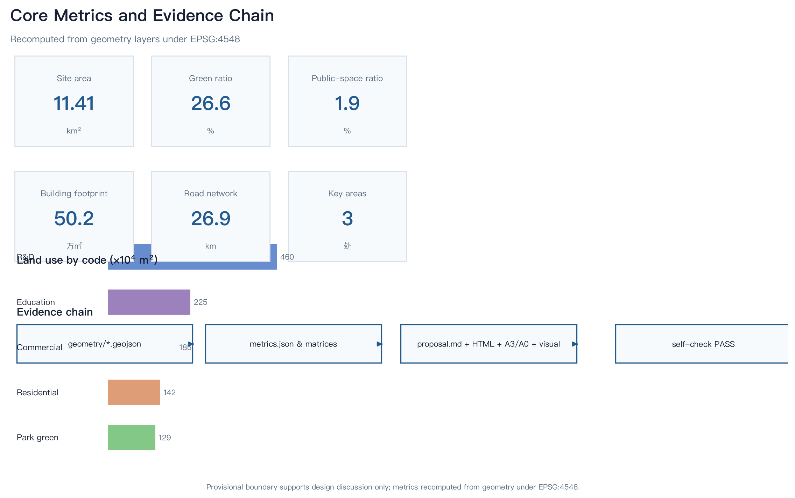

Site Overview

Fig.1 Source-evidence chain and submission package · provisional boundary (dashed) for discussion only

Fig.2 Three-level scope and land-use structure · 12 conceptual zones
Site area
11.41
km²
Green ratio
26.61%
ratio
Public-space ratio
1.92%
ratio
Key areas
3
count
Key Areas

Fig.3 Three key areas · provisional scope (dashed) is directional design
| Key area | Area | Positioning | AI scenarios |
|---|---|---|---|
| Zhongzhiyuan AI Acceleration | 192.1 ha | Garden full-stack self-reliant block | Model testing · safety sandbox · low-carbon compute |
| Beijing AI Origin Community | 104.3 ha | Campus-adjacent transfer & talent community | Open-source release · result transfer · talent zone |
| Dazhongsi AI Industry Cluster | 72.0 ha | Urban intelligent-economy & exchange block | Terminal display · content · data elements · roadshow |
Mobility and Blue-Green

Fig.4 Jing-Zhang innovation spine (slow-priority) · blue-green composite loop

Fig.5 Core metrics and evidence chain · recomputed under EPSG:4548
Renewal Projects and Phasing
| ID | Project | Type |
|---|---|---|
| JZ-01 | Heritage Park slow-mobility stitching | Public space / transport |
| JZ-02 | Zhongzhiyuan Qinghe innovation interface | Blue-green / industry |
| JZ-03 | Origin campus-adjacent transfer street | Renewal / services |
| JZ-04 | Dazhongsi four-quadrant connectivity | Rail / slow mobility |
| JZ-05 | AI public service & edge-compute node | New infrastructure |
| JZ-06 | Global AI Activity Week route | Operation / brand |
Task Coverage
- agent.1Overall concept, naming/logo, three areas and two wings
- agent.2Full-stack AI innovation ecosystem (8 global cases)
- agent.3AI+ scenario paradigm (12 scenario cards / 4 tests / 6 personas)
- agent.4AI public space & pilgrimage landmarks (4 landmarks + honor display)
- agent.5Jing-Zhang–Zhongguancun–AI cultural narrative
- agent.6Global AI event system & long-term operation
Sources and Assumptions
Provisional boundary (dashed) is for design discussion only, not an official redline; recalculate all area metrics when official polygons are released. FAR, height, density, and setbacks are pending official regulatory conditions. AI scenarios, landmarks, and events are conceptual suggestions, not government commitments.